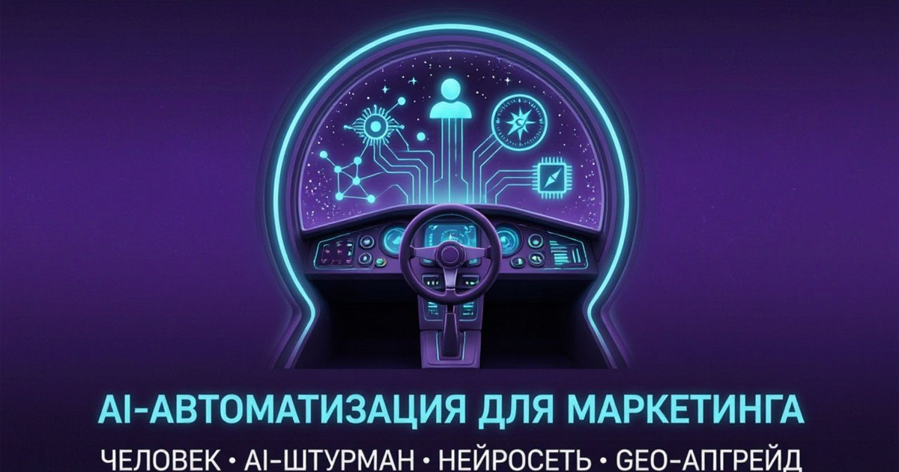

AI-автоматизация в маркетинге: как освободить время, не потеряв голос бренда
Как передать нейросети повторяющиеся задачи — и не передать ей вместе с ними стратегию, ответственность и характер бренда.
23 сентября 2026 · 13–16 минут · Дарья Жарких

Нейросеть может за несколько минут разобрать сотни отзывов, собрать контент-план, найти закономерности в данных, подготовить документ или предложить вариант кода. Но она не знает ваш бизнес так, как знаете его вы.
Она не чувствует клиента, который уже третий раз объясняет одну и ту же проблему. Не знает, какое обещание вы никогда не дадите. Не понимает, почему одна фраза идеально подходит вашему бренду, а другая звучит так, будто её достали из коробки с универсальными рекламными шаблонами.
Поэтому AI-автоматизация в GEO-Апгрейде — это не передача маркетинга машине. Это рабочая связка:
Капитан — владелец бизнеса или эксперт. Он знает, куда должен прийти проект, какие ценности нельзя потерять и какой результат действительно важен.
AI-штурман — человек, который направляет нейросеть: ставит задачу, даёт контекст, выбирает инструменты, проверяет результат и решает, что можно использовать.
Нейросеть — инструмент-партнёр, который помогает анализировать, структурировать, создавать черновики и снимать с команды повторяющуюся рутину.
Если убрать капитана, пропадает цель. Если убрать штурмана, исчезает контроль. А если отказаться от нейросети, многие процессы снова начнут двигаться со скоростью черепахи в понедельник утром.
«AI действительно заменит маркетолога?»
Скорее всего, нет. Но маркетолог, который умеет работать с нейросетями, вполне может обойти того, кто продолжает вручную делать всё, что давно можно передать инструментам.
AI хорош в подготовительном слое: собирает варианты, классифицирует данные, находит повторяющиеся темы, формирует черновики, предлагает структуру и помогает заметить связи. Но стратегия бренда, финальная проверка фактов, работа с чувствительными ситуациями и решение о публикации должны оставаться у человека.
| Участник | Главная функция |
|---|---|
| Капитан — владелец или эксперт | Определяет цель, ценности и направление бизнеса |
| AI-штурман — человек, направляющий AI | Формулирует задачи, задаёт правила и проверяет результат |
| Нейросеть | Анализирует, структурирует, предлагает варианты и снимает рутину |
«Что в маркетинге стоит автоматизировать первым?»
Начинать лучше не с самого модного процесса, а с того, что регулярно повторяется и съедает время. Например, менеджер ежедневно вручную читает отзывы, определяет их тональность, придумывает ответы и заносит повторяющиеся проблемы в таблицу. Нейросеть способна сгруппировать отзывы, найти темы, предложить черновики и отметить ситуации, которые нельзя оставлять без внимания. Финальное решение всё равно остаётся за человеком.
| Процесс | Что делает нейросеть | Что проверяет человек |
|---|---|---|
| Отзывы | Классифицирует и готовит черновик | Факты, эмпатию и тон |
| Исследование аудитории | Группирует вопросы и боли | Связь с реальными клиентами |
| Конкуренты | Собирает открытые данные | Значимость выводов |
| Контент | Предлагает черновик и адаптации | Смысл, факты и стиль |
| GEO-аудит | Сводит ответы и повторяющиеся сигналы | Интерпретацию и приоритеты |
| Документы и код | Формирует структуру, таблицы, варианты | Расчёты, безопасность и работу сайта |
Под автоматизацию хорошо подходят сбор и анализ отзывов, исследование аудитории, подготовка черновиков и контент-планов, адаптация материалов под площадки, отчётность и обработка результатов GEO-аудита. AI может помочь и с метапромптингом: сначала создать инструкцию для задачи, затем использовать её в другом инструменте. Но готовый результат всё равно должен пройти человеческую проверку.
«Почему одного хорошего промпта недостаточно?»
Потому что промпт — это инструкция, а не вся рабочая система. Для устойчивого процесса нужны цель, контекст, исходные данные, ограничения, формат результата, критерии качества и понятная точка проверки.
В GEO-Апгрейде мы называем такую систему промпт-цехом.
Это не папка с десятками случайных запросов, которые однажды дали красивый результат и потом таинственно перестали работать. В промпт-цехе есть проверенные версии, сценарии в тестировании, инструкции для разных ролей, примеры входных данных и результата, типичные ошибки, правила проверки и дата обновления.
Пример: обработка отзыва
Слабая автоматизация звучит просто: «Напиши вежливый ответ на этот отзыв». Промпт-цех идёт по маршруту: определить тип отзыва, выделить ситуацию, проверить факты, выбрать тон, подготовить ответ, отметить риск, передать человеку на утверждение и сохранить тему для анализа.
Один промпт выдаёт ответ. Система промптов помогает выстроить процесс.
«Как AI может обрабатывать отзывы и не звучать одинаково?»
Автоматический ответ легко узнать: «Спасибо за ваш ценный отзыв! Мы рады, что вы остались довольны качеством обслуживания». Так можно ответить клиенту кафе, клиники, магазина и автомойки. Вроде вежливо, но живого человека в тексте не обнаружено.
Персональный AI-сценарий учитывает содержание отзыва, конкретную услугу, ситуацию клиента, стиль бренда, правила ответа на негатив, запрет на необоснованные обещания и необходимость передать проблему менеджеру.
Навигатор отзывов
Это один из сценариев GEO-Навигатора. Нейросеть определяет тему, классифицирует отзыв, выделяет проблему, готовит черновик ответа и предлагает внутренний тег для аналитики. Человек проверяет факты, корректирует формулировки, оценивает тон и решает, нужен ли руководитель.
Отзывы становятся не только задачей «ответить клиенту», но и источником для улучшения продукта, FAQ, контент-плана, обучения команды, обновления страницы услуги и усиления AI-следа бренда. Иногда один повторяющийся отзыв рассказывает о клиенте больше, чем час совещания с маркетологами.
GEO-аудит без иллюзий
Отчёт по AI-видимости может включать десятки запросов, несколько нейросетей, конкурентов, источники, карты, каталоги, отзывы и контентные пробелы. Нейросеть способна сгруппировать повторяющиеся наблюдения, свести данные в таблицу, сравнить ответы до и после, найти противоречия и подготовить черновик выводов.
Но AI не должен сам решать, что важно для бизнеса. Капитан и AI-штурман оценивают достоверность источников, качество выборки, реальную значимость конкурента, выполнимость рекомендации и связь вывода с бизнес-задачей.
данные → AI-сводка → проверка источников → экспертная интерпретация → редактура → согласование → действие
Он особенно нужен там, где есть репутационные риски, юридические вопросы, медицина, финансы или публичные обещания.
«Какие инструменты подходят для AI-автоматизации?»
Инструмент выбирают под задачу, а не по принципу «этим сейчас пользуются все».
Perplexity
Для GEO-Апгрейда Perplexity интересна как исследовательская среда: Projects объединяют поисковые диалоги, файлы, инструкции, задачи и подключённые инструменты в одном рабочем пространстве для продолжающегося проекта. Это удобно, когда вы ведёте бренд, контентную систему или исследование и не хотите заново объяснять контекст в каждом диалоге. [1]
DeepSeek
DeepSeek можно использовать там, где нужен последовательный анализ и длинная логика рассуждения. Но даже сильный результат стоит проверять — особенно если выводы опираются на факты, цифры или внешние источники. Документация DeepSeek отдельно описывает reasoning-модель для задач с рассуждением. [2]
Таблицы, CRM и документы
AI может создавать таблицы, добавлять формулы, группировать данные, готовить отчёты, классифицировать обращения и структурировать CRM-поля. Но автоматическое создание таблицы не означает автоматическую корректность расчётов — формулы и итоги проверяет человек.
Google также подчёркивает: при генеративном контенте важны точность, качество и релевантность; использование AI для манипуляции поисковой выдачей нарушает правила. [3]
«Кто капитан, кто штурман и кто инструмент?»
Возьмём компанию, которая хочет автоматизировать ответы на отзывы. Капитан определяет образ бренда, границы обещаний и нужный результат. AI-штурман собирает факты, проектирует промпт-цех, выбирает инструмент, задаёт правила и проверяет сценарий. Нейросеть читает отзывы, определяет тип обращения, предлагает черновик и выделяет повторяющиеся темы.
Капитан ↓ определяет цель
AI-штурман ↓ направляет и проверяет
Нейросеть ↓ анализирует и оптимизирует
Рабочий процесс
Никто не лишний: без капитана нет направления, без штурмана нет контроля, без нейросети процесс остаётся медленнее.
«Что такое автоматизационный разрыв?»
Автоматизационный разрыв появляется, когда бизнес отдаёт AI слишком много полномочий, но не передаёт ему стратегию и не оставляет человеческий контроль.
Он возникает, если публикации выходят без проверки, AI сам определяет цели, никто не знает, по каким правилам он работает, промпты нигде не хранятся, источники не проверяются, а конфиденциальные данные загружаются без правил.
Как закрыть разрыв
Сначала определите, что именно автоматизируете, кто принимает финальное решение, какие данные разрешены, какие источники надёжны, что делать при ошибке, где обязательна проверка, как отменить действие и как измерить качество.
«Может ли AI испортить голос бренда?»
Да. Особенно если дать ему слишком общую задачу: «Пиши в стиле нашей компании». Одно слово «дружелюбно» не объясняет, сколько конкретики нужно, можно ли использовать юмор, какие слова запрещены, как отвечать на негатив и где бренд звучит уверенно, а где осторожно.
Для сохранения голоса нужны примеры хороших текстов, список запрещённых фраз, словарь бренда, правила обращения, образцы ответов, ценности, границы обещаний и критерии качества.
«Что нельзя полностью отдавать нейросети?»
| Область | Роль AI | Финальное решение |
|---|---|---|
| Факты | Найти и структурировать | Человек проверяет |
| Закон и договоры | Предложить черновик | Юрист или ответственный специалист |
| Репутационный конфликт | Сформировать варианты | Владелец или руководитель |
| Публикация | Подготовить материал | Ответственный сотрудник |
| Финансы | Помочь с таблицей | Уполномоченный человек |
| Стратегия | Предложить сценарии | Капитан бизнеса |
«Как AI помогает исследовать аудиторию и конкурентов?»
AI полезен, если работает не с выдуманными персонажами, а с реальными материалами: отзывами, переписками, комментариями, поисковыми вопросами, заявками, интервью и обращениями в поддержку.
Нейросеть может сгруппировать вопросы, но человек проверяет, существует ли такая потребность на самом деле и насколько она важна. С конкурентами логика та же: AI собирает открытые сведения об услугах, позиционировании, контенте, отзывах и площадках, а вы отделяете факт от гипотезы и собственной интерпретации.
обнаружение → проверка источников → сравнение → интерпретация → собственный сигнал
Мы не копируем конкурентов. Мы изучаем, какие задачи они уже закрывают, и ищем собственный путь решения.
«Что будет, если автоматизировать плохой процесс?»
Получится плохой процесс, который работает быстрее. Если компания не знает, кто её клиент, какие у неё ценности, что допустимо обещать, кто утверждает публикации и что считать хорошим результатом, нейросеть не исправит это одним запросом. Она будет производить разные версии неопределённости — быстро, уверенно и иногда очень красиво.
AI-автоматизация масштабирует не только сильную методику, но и слабую.
Поэтому сначала поймите процесс, опишите его шаги, установите контрольные точки — и только затем передавайте часть работы нейросети.
«Как начать AI-автоматизацию без большого бюджета?»
Выберите один повторяющийся процесс, который занимает заметное время, имеет понятный результат и допускает проверку. Это могут быть ответы на отзывы, сбор вопросов аудитории, адаптация статьи под площадки, контент-план, анализ результатов GEO-сканера или еженедельный маркетинговый отчёт.
- Соберите несколько реальных примеров.
- Опишите, как выглядит хороший результат.
- Настройте промпт-цех.
- Добавьте контур доверия.
- Проверьте сценарий на небольшом объёме.
- Сравните время и качество.
- Исправьте правила.
- Только затем масштабируйте.
Пульт управления AI-процессом
Вместо обычного чек-листа используем «Пульт управления AI-процессом» — схему из пяти контрольных зон.
1. Курс
Вопрос: куда должен привести процесс?
Пример: отвечать на отзывы быстрее, сохранять человеческий тон и находить повторяющиеся проблемы.
2. Топливо
Вопрос: какие данные получает AI?
Пример: отзывы, правила бренда, список услуг, допустимые обещания и удачные ответы.
3. Маршрут
Вопрос: какие шаги проходит задача?
Пример: классификация → черновик → проверка → согласование → публикация → аналитика.
4. Красные зоны
Вопрос: где AI не может решать самостоятельно?
Пример: юридические риски, финансы, публикация без проверки, конфиденциальные данные.
5. Контроль
Вопрос: как понять, что процесс действительно стал лучше?
Пример: уменьшилась ли ручная работа, быстрее ли готовится ответ, сохранился ли голос бренда и стало ли меньше ошибок.
Перед запуском автоматизации пройдите эти пять зон. Если вы не можете объяснить курс, входные данные, маршрут, ограничения и способ проверки, процесс ещё рано отдавать нейросети.
Что важно запомнить
- Капитан выбирает направление; AI-штурман проектирует маршрут; нейросеть ускоряет работу.
- AI не заменяет стратегию и ответственность.
- Один промпт не заменяет промпт-цех.
- Отзывы и GEO-аудит дают AI материал для анализа, но человеку оставляют интерпретацию.
- Автоматизационный разрыв появляется там, где исчезают стратегия и человеческий контроль.
- Автоматизируйте сначала один понятный процесс, затем масштабируйте.
Хотите понять, что можно автоматизировать в вашем бизнесе?
GEO-Навигатор помогает собрать персональный AI-сценарий под вашу нишу: от обработки отзывов и исследования аудитории до контент-планов, отчётов и промпт-цеха.